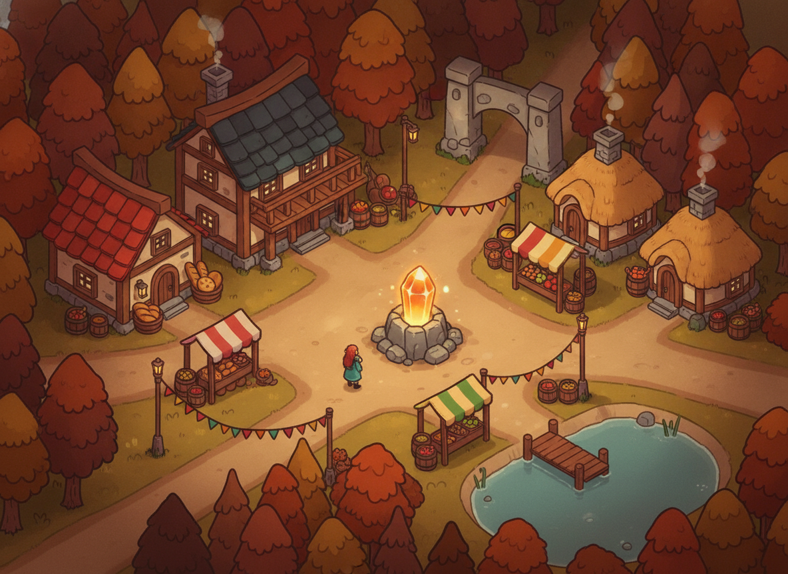
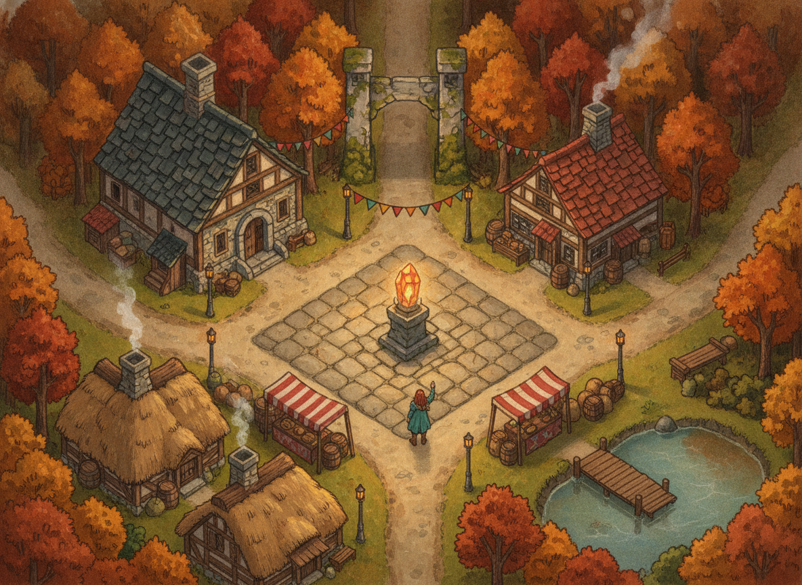
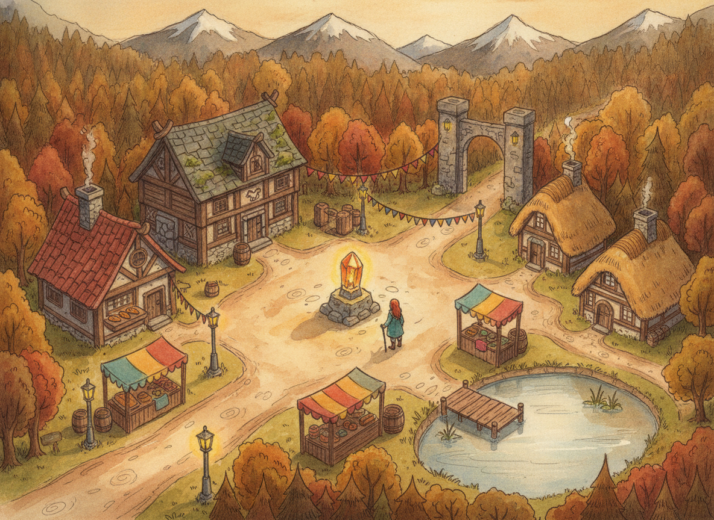
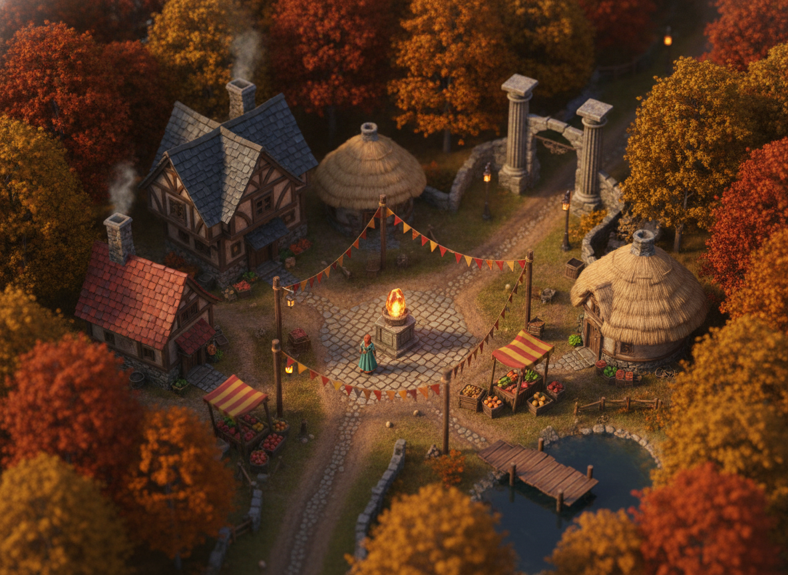

character ≈ ½ house height · big friendly scale, compact toy-like village, thick outlines

character ≈ ⅓ house height · balanced classic RPG proportions, gouache detail

character ≈ ⅓ house height · pencil linework + washes, matches the dialogue busts

character ≈ ¼ house height · grand detailed world, tilt-shift feel